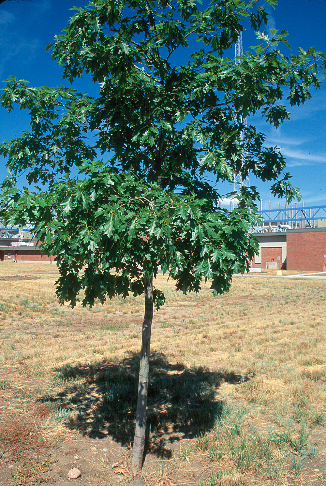

|
|
(For further information on spectroscopy, see:
http://speclab.cr.usgs.gov)
TITLE: Oak Oak-Leaf-1 fresh DESCRIPT
DOCUMENTATION_FORMAT: PLANT
SAMPLE_ID: Oak-Leaf-1
PLANT_TYPE: Deciduous Tree
PLANT: Oak
LATIN_NAME: Quercus robur
COLLECTION_LOCALITY: Lakewood, Colorado
ORIGINAL_DONOR: Raymond Kokaly
SAMPLE_DESCRIPTION:
Average reflectance of a single oak leaf, measured laying flat on a strongly absorbing laboratory benchtop. The leaf was cut from a tree and measured within ten minutes. Fresh leaf weight was 1.65g. The oak leaf was a dark green color when collected. The leaf was collected from the sunlit east side of the tree from the lower branches.
Leaf weight after oven-drying for 72 hours at 30 degrees Celsius was 0.83g (see sample Oak-Leaf-2).
Photos of the sample:



END_SAMPLE_DESCRIPTION.
COMPOSITIONAL_ANALYSIS_TYPE: none
COMPOSITION_DISCUSSION:
END_COMPOSITION_DISCUSSION.
TRACE_ELEMENT_ANALYSIS: none
TRACE_ELEMENT_DISCUSSION:
END_TRACE_ELEMENT_DISCUSSION.
SPECTROSCOPIC_DISCUSSION:
END_SPECTROSCOPIC_DISCUSSION.
SPECTRAL_PURITY: 1a2_3_4_ # 1= 0.2-3, 2= 1.5-6, 3= 6-25, 4= 20-150 microns
| LIB_SPECTRA_HED: | where | Wave Range | Av_Rs_Pwr | Comment |
|---|---|---|---|---|
| LIB_SPECTRA: | splib05a r 11754 | 0.3-2.5µm | 200 | |
| LIB_SPECTRA: | splib06a r 30669 | g.s.= |